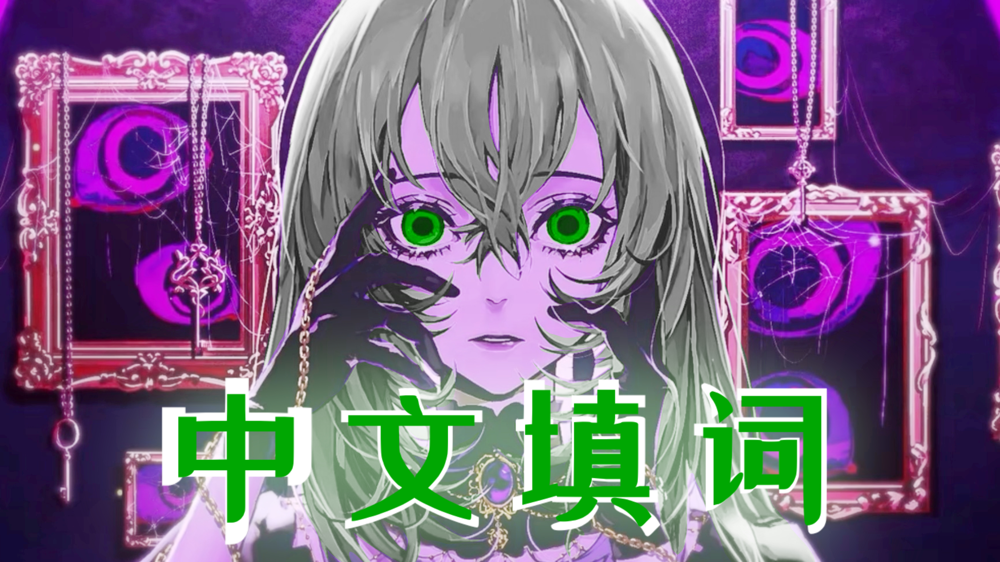
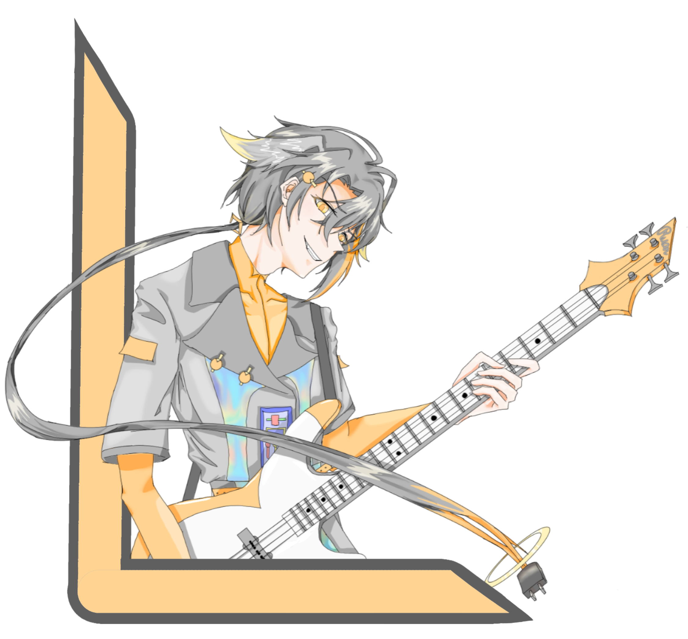
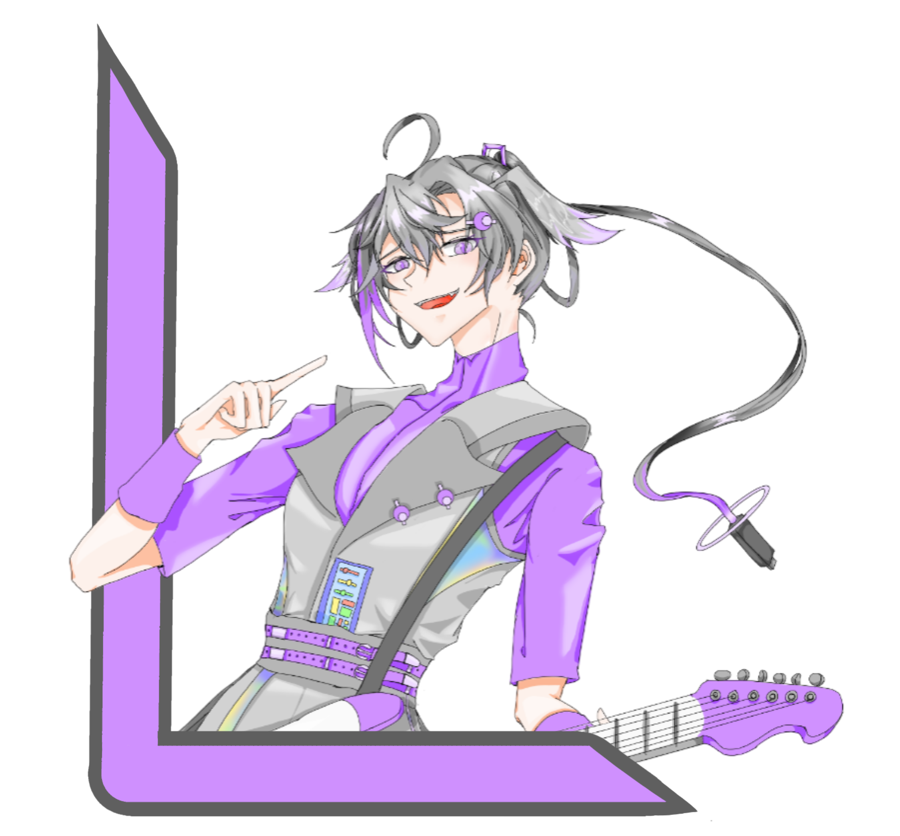
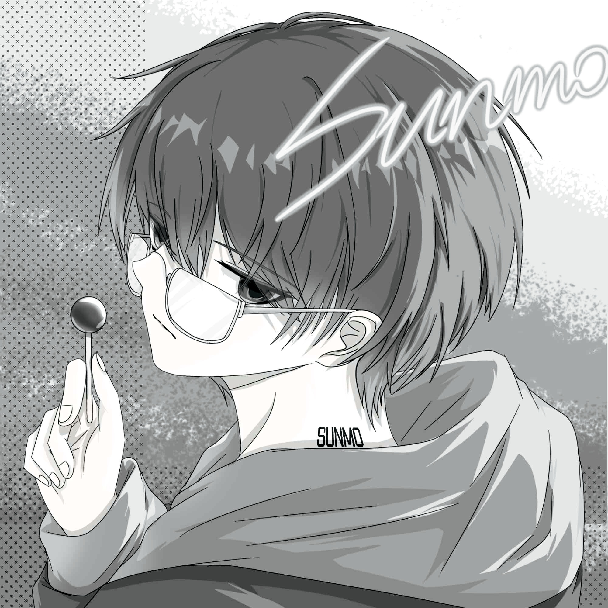
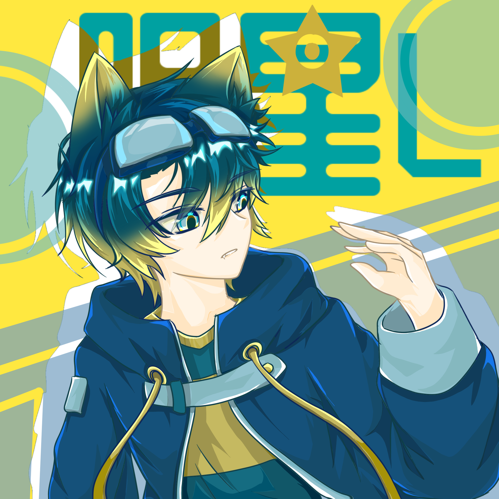
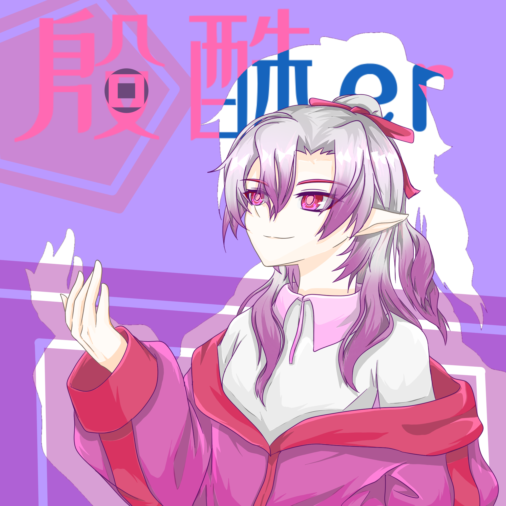
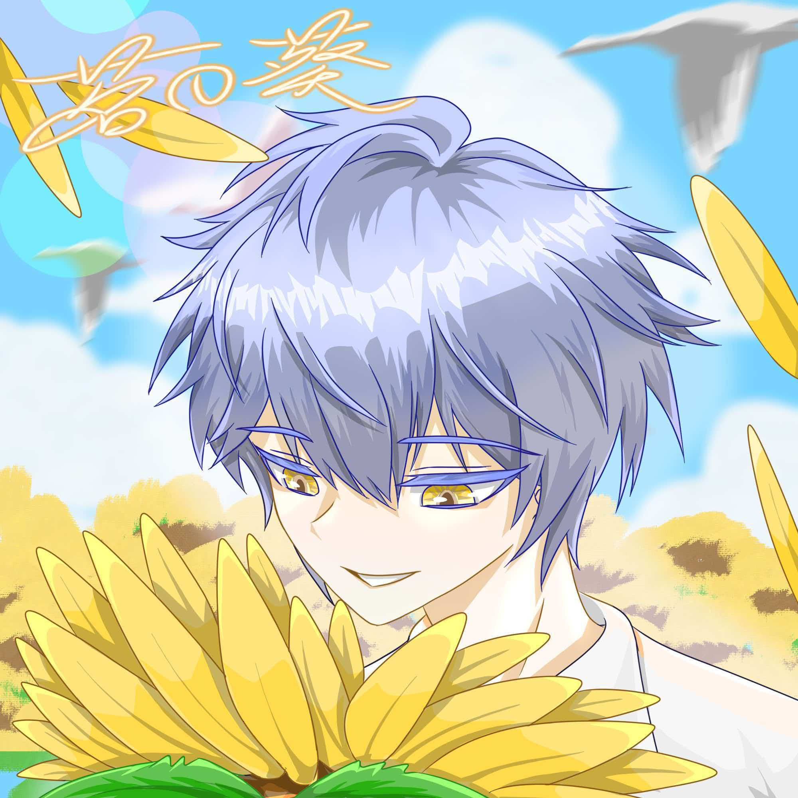

工程文件
PROJECT FILES
-

声库下载
VOICEBANK DOWNLOAD
-

NAME: 阮日晖CVVC_ZHINTRODUCE: 中文CVVC三音阶男声DOWNLOAD
阮日晖中文声库，版本1.0，适用于utau以及Openutau。 传统CVVC声库，包含三个音阶，形象成熟但因为其年龄只有三岁所以音色为少年音。 【代表色：橙色】【擅长乐器：节奏贝斯】 -

NAME: 阮月胧CVVC_ZHINTRODUCE: 中文CVVC三音阶女声DOWNLOAD
阮月胧中文声库，版本1.0，适用于utau以及Openutau。 传统CVVC声库，包含三个音阶，形象成熟但因为其年龄只有三岁所以音色为少女音。 【代表色：紫色】【擅长乐器：节奏吉他】
最新消息
LATEST NEWS
全新声库-青岚正在制作中......
全新声库-落羽正在制作中......
关于成员
ABOUT MEMBERS
-

NAME: 慕陌隼INTRODUCE: 一个破负责技术的主力→点我进入B站主页
英文名Sunmo，是个能工智人，有事情找他就对了。 是虚拟歌手【阮日晖】的CV，同时爱玩cosplay，cn桑陌欢迎扩列! -
NAME: 眠月泉阿潘INTRODUCE: 一个画到头秃的画师→点我进入B站主页
别名Panmoter，喜欢熊猫，人特别内向，负责所有美术设计，因此经常失眠与失联。
所有歌手的立绘、封面、宣传图等等都出自她手。 -

-

-
NAME: 芳彼芮泽安INTRODUCE: 一个混迹在KTV的主唱→点我进入B站主页
洋气一点可以叫她Harsonist，腹黑选手，可能会因为唱术曲而发出鬼叫声，但，确实是主唱。
是虚拟歌手【阮月胧】的CV。 -
